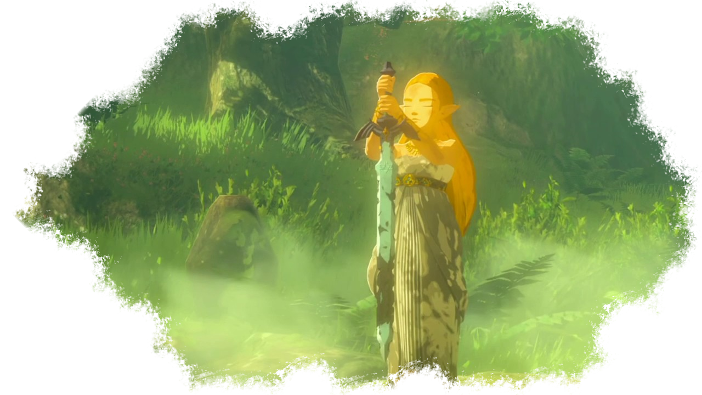

Les Korogus
Les Korogus sont des êtres étranges faits de bois et ressemblant à une branche d'arbre avec une tête en feuille. Bien que certains korogus sont immenses, comme noïa le musicien par exemple, la grande majorité d'entre-eux sont petits et ne dépassent pas la taille d'un enfant.
Les korogus sont capable de voler grâce à des feuilles qui leur servent d'hélicoptères. Ils sont invisible aux yeux des autres races. Link et Zelda sont capable de les voir. Peut-être est-ce grâce à leur statut d'élu de la lame et de réincarnation de la Déesse qui leur donne des capacités uniques.
Les korogus vivent dans la forêt korugu, dans la région de la grande forêt d'Hyrule. cette forêt est magique et une brume magique empêche les visiteurs d'accéder en son centre où les korugus ont leur village.
Profondément pacifiques et non violents, ils préfèrent se cacher dans leur forêt et évitent le contact avec les autres races, qui de toute manière ne peuvent pas les voir.
Ces petits êtres sont joueurs et taquins, et beaucoup d'entre eux ont décidé de quitter leur forêt pour aller ce cacher dans toute la région d'Hyrule, parfois dans des endroits entourés de dangers. Ils récompensent Link en leur donnant une noix dès que celui-ci parvient à les trouver.
L'épicentre de la forêt est un endroit sacré où vit l'arbre Mojo, le chef des korogus et entité légendaire en Hyrule. En effet, le grand arbre millénaire est sage et ses conseils sont sûrs. Il a joué un rôle essentiel au retour de Link, puisque c'est lui qui a veillé sur la lame purificatrice.
Lorsque Link, mort, est emmené dans l'incubateur par les sheikahs, la princesse Zelda se rend dans la forêt où Link à retiré l'épée de légende. Elle la replante dans son socle pour qu'elle se régénère et parle avec l'arbre Mojo qui est curieux de savoir comment elle envisage la suite de la bataille contre Ganon. La princesse lui demande de transmettre un message au héros lors de son retour, mais celui-ci refuse d'en entendre le contenu et explique à Zelda qu'il faut qu'elle le transmette elle-même. C'est avec sagesse qu'il fait comprendre à la jeune fille qu'elle doit se battre pour sa survie et celle du royaume, mais également pour retrouver celui qu'elle aime.
Pour protéger la lame de l'influence de Ganon et empêcher ses sbires de venir la détruire, il fait apparaître une brume magique sur l'ensemble de la forêt. Grâce à cette étrange pouvoir, quiconque tente de s'aventurer dans les brumes sans savoir comment s'y orienter se retrouve téléporté instantanément à la lisière. Seul les korogus et ceux qui parviennent à traverser ces bois enchantés peuvent prétendre à accéder à l'épée et au peuple des forêts.
